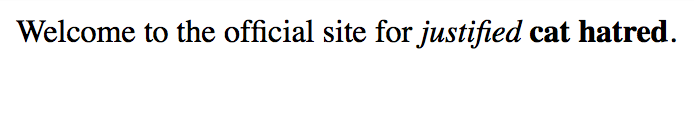

As a continuation of Starter Web App, we’ll be making our server respond with some well formatted HTML. We want this so we can also test our web server with a real web browser.
If your server is already running, you can visit it in your browser by navigating to http://localhost:3000. You will see the “ohai” we added earlier in a very flat, ugly “page”. It’s not actually a page, but instead how the browser displays plain text content. We want to give back some actual HTML so we can make a pretty page with meaningful content.
Right now we’re sending plain text over the wire with this expression:
res.send('ohai')
res is short for response. This a common convention in Express examples.
In programming we can name our variables whatever we want. It’s both a
blessing and a curse. We want our variable names to be both meaningful and
descriptive, but also terse enough that we can quickly understand what the
purpose of the variable is and move on. Since we’re writing a web server that
is loaded full of handling requests and responses, we’ve chosen to abbreviate
the name. Naming variables is sort of an art form, and not everyone agrees on
all of the methods employed at naming them.
I personally have moved to a place where I value the use of vaguer names rather more specific ones, and I’m okay with many reasonable abbreviations. I have other means of making my variables make more sense to me. You’ll find your own way, and probably change it several times as you become more experienced.
Both requests and responses have additional meta-data attached to them that helps facilitate communication. This meta data can indicate what language and locale your machine uses (and what it falls back to) as well as the format of the data you prefer. This meta data is expressed by something called HTTP headers, or just headers for short. A header looks like this:
Header-Name: header-value Other-Header-Name: other-header-value
Additional headers are separated by line breaks, as shown above.
Here, we’re going to announce that we’re sending HTML. We do this by setting
the Content-Type header to text/html. This is a special value that we
call a MIME type, which we can get into later. I checked Express’s API docs
for how to set headers, and this is what we need to do to indicate we’re
sending HTML back:
res.set('Content-Type', 'text/html')
This needs to come before we send the response body. Response headers must always come first. Afterwards the response body is included. Make sure your code now looks like this inside of your request handler:
res.set('Content-Type', 'text/html') res.send('ohai')
But we’re not actually sending HTML yet. Let’s change that now, and add a little more flavor to our site.
res.set('Content-Type', 'text/html') res.send('\ <html>\ <body>\ Welcome to the official site for <em>justified</em>\ <strong>cat hatred</strong>.\ </body>\ </html>')
Once you’ve added these changes, save the file and restart the server. Use
control-c to kill the server when you’re in the terminal tab that has the
server running. Once that’s done, you can start the server back up with node
server.js.
Now that the server is back up and running, navigate to http://localhost:3000 in your browser of choice. If everything worked well, you should see something like this:

Let’s try this again with our prior tool, curl.
curl http://localhost:3000
You’ll see something like what we typed in on the JavaScript side:
<html> <body> Welcome to the official site for <em>justified</em> <strong>cat hatred</strong>. </body> </html>
Well this is kind of hard to read. Imagine if we curled a real webpage with lots of stuff on it! There would be HTML everywhere, and it would be hard for us to see what’s going on quickly. Let’s add the capability to support multiple content types.
When your web browser sends a request to a server, it will generally ask for
HTML. It does that with an Accept request header that looks like this:
Accept: text/html
In Express, we get to see the request the client sent to us. We can ask it
for the accept header and make a decision based on that. The real Accept
header can actually take a lot more than just a single MIME type. Express
provides a helper for letting us ask if a particular type we’re interested in
is supported by what the browser sent, and that is a function called
accepts and it lives on the request object. We can ask if the request sent
prefers text/html like this code that won’t put in just yet:
req.accepts('text/html')
We want to check if the client wants text/html and respond with actual
HTML, otherwise we want to respond with plain text (text/plain). We’ll
update the message to match. The text/plain response should look like:
Welcome to the official site for justified cat hatred.
Instead of telling you what the code is here, I’m going to have you figure
it out yourself. You’ve already done if statements in the past, so you
have some basic logic flow. Now you’re going to put it to work alongside the
examples you have so far.
To know if you got the homework here correct, I have a test I’ve created. Run this test, and it will tell you if you’ve satisfied the requirements we’re looking for.
You will need to install pup via brew in order to ensure that this script
works. Copy the code block below and create a new file in your directory
called accept-test.sh. pup processes HTML from the command line, and in
this case is being used to ensure a uniform format of the HTML that’s easy to
compare.
#! /usr/bin/env bash htmlResult=`curl -H 'Accept: text/html' 'http://localhost:3000' | pup` textResult=`curl -H 'Accept: text/plain' 'http://localhost:3000'` htmlValid=false textValid=false correctHtml=$(cat <<EOF <html> <head> </head> <body> Welcome to the official site for <em> justified </em> <strong> cat hatred </strong> . </body> </html> EOF ) if [ "$htmlResult" = "$correctHtml" ]; then htmlValid=true else echo "HTML result was '$htmlResult' but we were expecting '$correctHtml'" fi correctText='Welcome to the official site for justified cat hatred.' if [ "$textResult" = "$correctText" ]; then textValid=true else echo "Text result was '$textResult' but we were expecting '$correctText'" fi if [[ "$htmlValid" = true && "$textValid" = true ]]; then echo "The test passed and the output is what's expected\!" else echo "The test failed. See error(s) above." exit 1 fi
Once you’ve copied the file, run this to make it executable:
chmod +x accept-test.sh
To run the test, use:
./accept-test.sh
Don’t forget to restart the server every time you save your changes!
After we get the homework test passing we can move onto the next thing, which will be making our server use dynamic data.